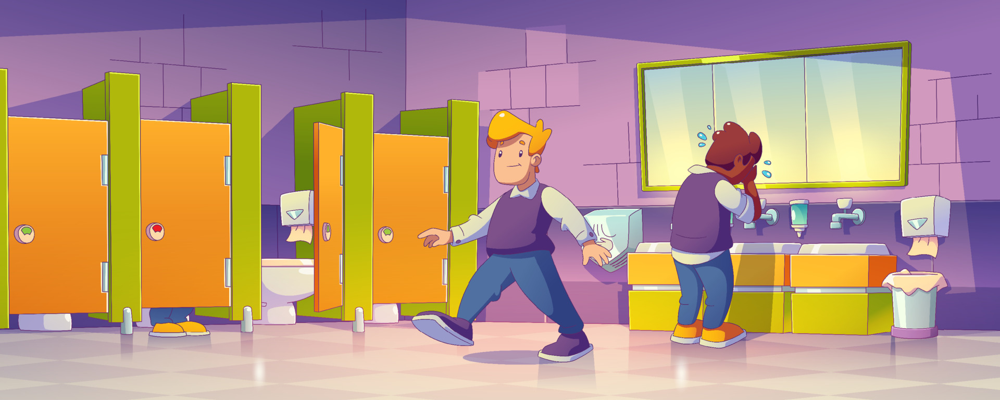

Em um dia na escola fui no banheiro e vi um compartimento secreto atras da privada abri e tinha uma caixa dentro
vi que tinhha uma carta dentro dizendo para ir em um lugar misterioso
resolvi voltar depois da aula porque sou curioso
vi que tinhha uma carta dentro dizendo para ir em um lugar misterioso
encontrei nada la fui feito de tonto, voltei pra casa comer.

cheguei em casa comi e fui dormir , acabei esquecendo da carta